Scheda 3.3 - La configurazione: quando i segni diventano struttura
Ogni progetto attraversa un momento in cui l’esplorazione diventa struttura. I segni, inizialmente liberi, cominciano a legarsi in una configurazione coerente: emergono allineamenti, campi, equilibri, nuclei spaziali. Non è ancora la forma definitiva, ma una struttura portante. Le immagini mostrano come la configurazione architettonica nasca come sistema di relazioni prima che come figura compiuta.
A.
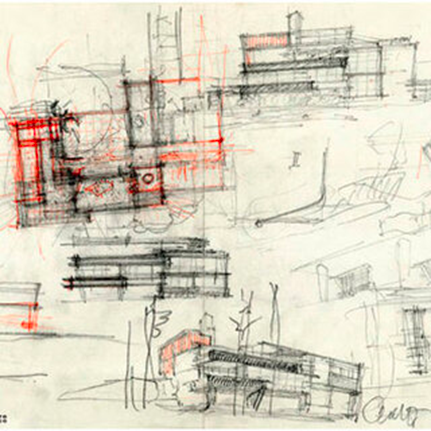
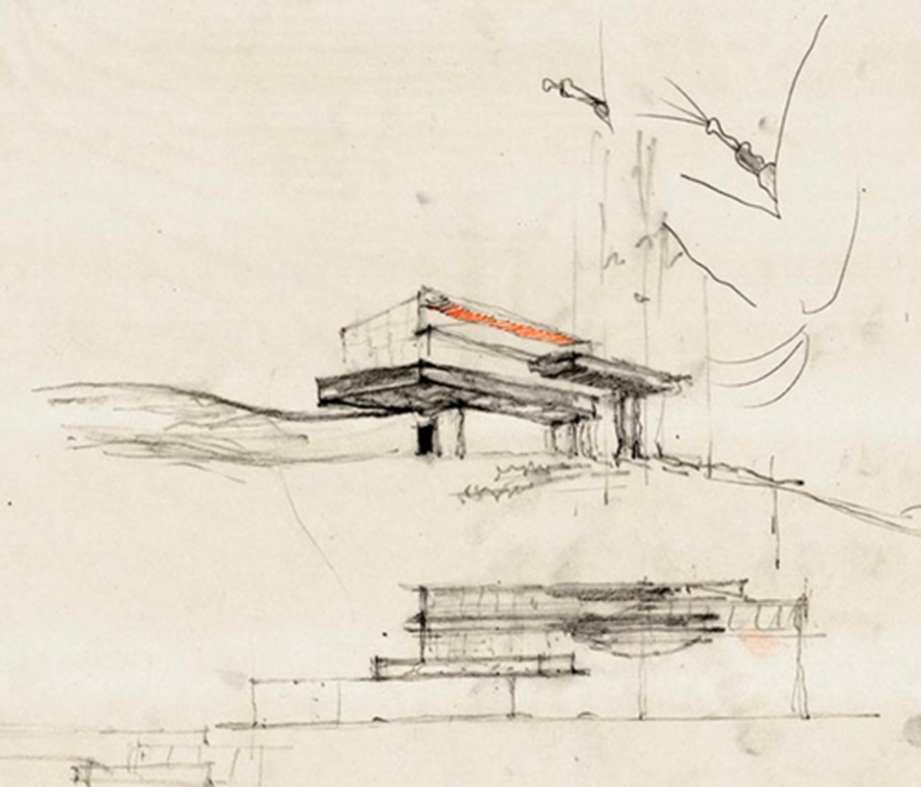
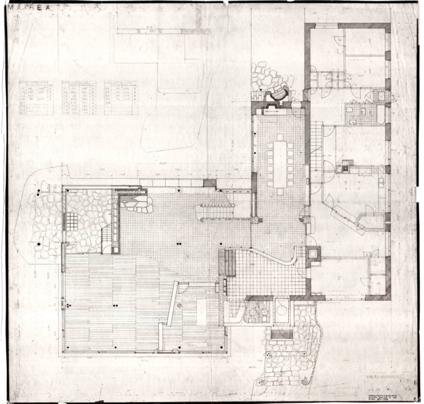

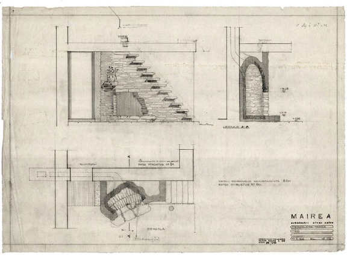
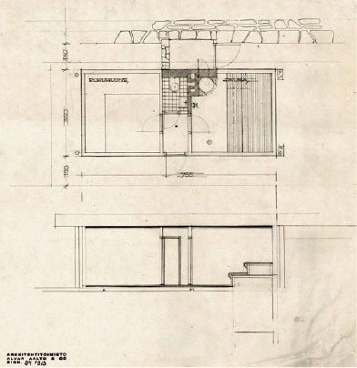
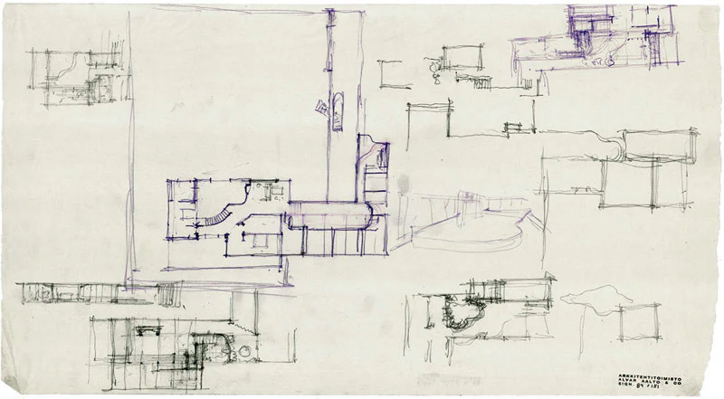
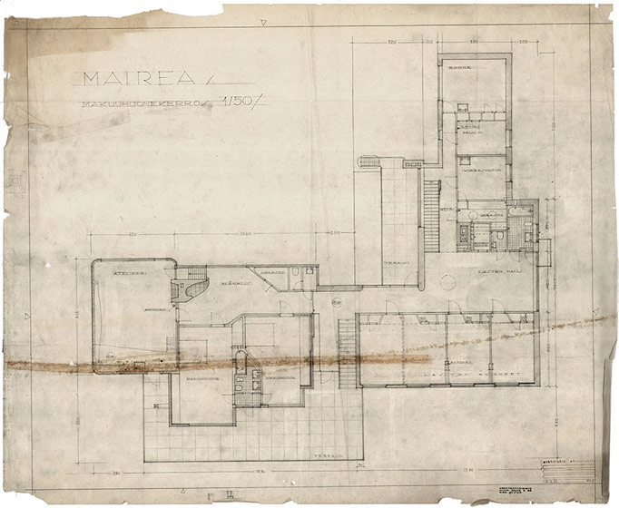
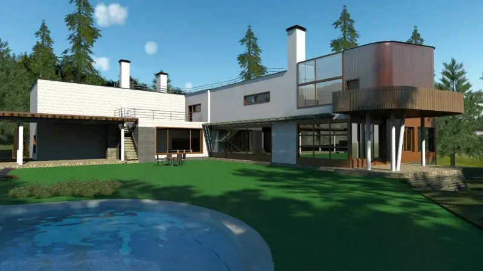
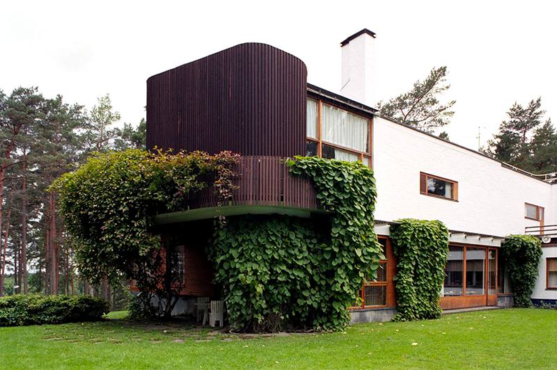
- come i segni iniziali si organizzano,
- come alcuni rapporti persistono e altri cambiano,
- come nasce una configurazione riconoscibile ancora prima che esista una forma definitiva.
Il processo di progettazione della Villa Mairea di Alvar Aalto ha comportato numerosi schizzi e iterazioni progettuali (esistono circa 800 disegni e schizzi in totale), che hanno portato alla realizzazione di una pianta a forma di L che fonde i principi dell’architettura moderna con forme organiche e naturali.
Panoramica della pianta
La pianta finale è organizzata a forma di L, caratteristica del design scandinavo, e contribuisce a definire le aree esterne semi-private e pubbliche, con un prato e una piscina situati nella cavità della “L”.
Le caratteristiche principali della pianta di Villa Mairea includono:
- Spazi fluidi Il piano terra presenta una disposizione fluida e aperta che integra la galleria, il soggiorno e la sala da pranzo. La divisione di questi spazi è definita in modo sottile da elementi come uno schermo di pali di legno (che evoca una foresta finlandese) e sezioni di pareti indipendenti, piuttosto che da pareti solide.
- Elementi organici Aalto ha incorporato una varietà di colonne con forme e texture diverse in tutto l’interno, evitando l’uniformità e rispecchiando la varietà naturale che si trova nella foresta circostante.
- onnessione con la natura La pianta enfatizza la continuità tra l’ambiente interno e quello esterno. Uno schermo ondulato è utilizzato tra le pareti divisorie della biblioteca e il soffitto per filtrare la luce, imitando ulteriormente l’esperienza di trovarsi all’aperto.
- Aree funzionali La casa è stata progettata come una “casa sperimentale” per Harry e Maire Gullichsen, incorporando una sauna, uno studio all’ultimo piano e un giardino d’inverno, riflettendo la richiesta dei clienti di un ambiente in cui Aalto potesse sperimentare liberamente le sue idee di design.
Schizzi di sviluppo
Non sembra essere sopravvissuta una serie completa di disegni originali di Villa Mairea, ma centinaia di schizzi e diagrammi di sviluppo evidenziano il processo di progettazione iterativo di Aalto. Questi schizzi mostrano una progressione da angoli retti più rigidi a un’integrazione più fluida di forme naturali e texture variegate.- Base geometrica Il progetto finale utilizza un sistema di griglia sottostante, ma gli elementi che si discostano dalle linee ortogonali, come gli angoli dei portici o una piscina curva, sono allineati con le diagonali tra i nodi della griglia, dimostrando una composizione accurata e pittorica piuttosto che un design arbitrario e libero.
- Influenze Gli schizzi e i diagrammi aiutano a illustrare le numerose influenze incorporate da Aalto, tra cui l’architettura giapponese, le tradizionali fattorie finlandesi (tupa) e il lavoro di architetti come Frank Lloyd Wright.
B.
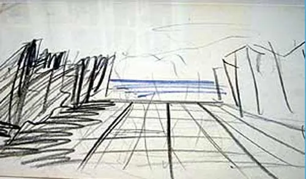
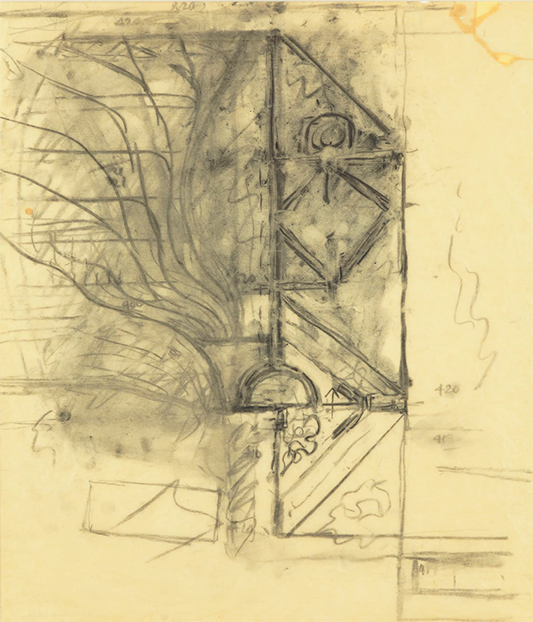
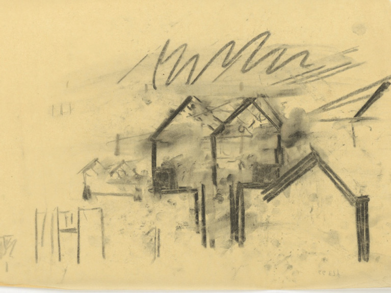
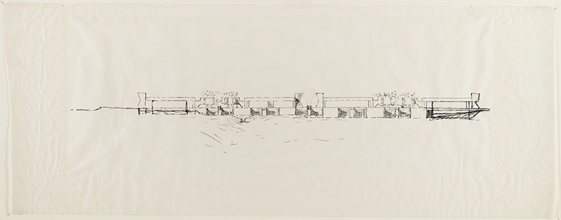
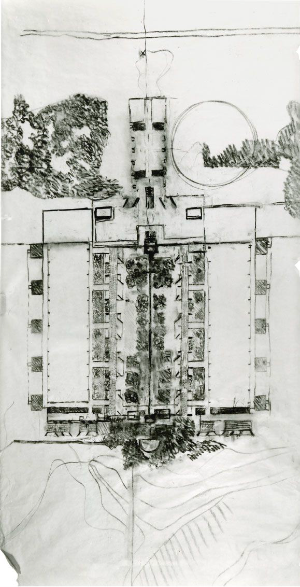
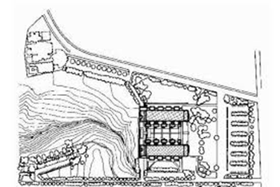
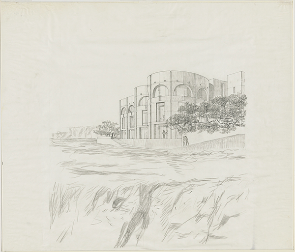
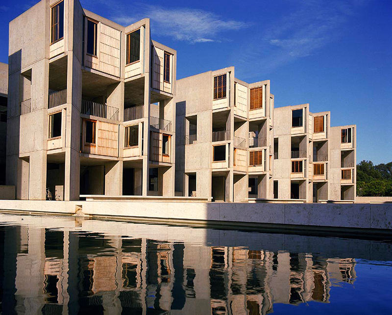
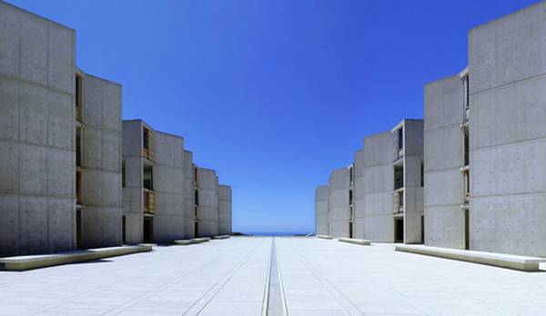
- la configurazione emerge come coppia di corti parallele,
- la simmetria non è un dogma ma una necessità percettiva,
- la geometria è ancora incerta,
- ma il campo di forze è già chiarissimo.
I primi schizzi di Louis Kahn per il Salk Institute rivelano un processo di progettazione in continua evoluzione, che passa dalle idee iniziali ispirate ai monasteri e a un cortile con giardino alla piazza simmetrica iconica finale con due ali di laboratori che costituiscono una “facciata verso il cielo”. Tra gli elementi chiave figuravano i progetti per un “luogo di incontro” e dormitori che non furono mai realizzati.
Caratteristiche principali dei progetti iniziali rispetto al progetto finale
Il processo di progettazione di Kahn ha comportato diverse trasformazioni importanti, con gli schizzi che fungevano da metodo di riflessione e scoperta architettonica.
- Programma originale: Il progetto iniziale per il Salk Institute comprendeva tre componenti principali: laboratori, una sala riunioni e dormitori per i docenti in visita. Alla fine sono stati realizzati solo i laboratori.
- Il cortile (giardino vs. piazza):
- Primi schizzi: mostravano un cortile centrale pieno di vari alberi, come i pioppi, per creare un’atmosfera mediterranea. Kahn ha lottato con questo concetto man mano che la costruzione procedeva.
- Progetto finale: sulla base del consiglio dell’architetto messicano Luis Barragán, Kahn ha optato per una piazza spoglia e aperta senza vegetazione, con uno stretto canale d’acqua che scorre verso l’Oceano Pacifico. Il suggerimento di Barragán era di “non aggiungere nemmeno una foglia” e di creare invece “un’altra facciata verso il cielo”. La piazza in travertino che ne è risultata, divisa in due dal corso d’acqua, offre una vista mozzafiato che unifica le due ali del laboratorio e sottolinea l’orizzonte dell’oceano.
- Il “luogo di incontro” (non realizzato): Kahn si interessò profondamente alla progettazione di un luogo di incontro separato, che considerava il “cervello” dei “polmoni” dei laboratori. Questa struttura, destinata a favorire l’interazione sociale e intellettuale, fu progettata meticolosamente, ma alla fine non fu realizzata per mancanza di fondi. I disegni di questa struttura non realizzata evidenziano l’esplorazione di Kahn della geometria e della trasformazione nel design.
- Struttura del laboratorio: I primi schizzi e disegni sperimentavano diverse soluzioni strutturali. Una versione esplorava l’uso di piastre piegate per i piani di servizio interstiziali a campata lunga, una soluzione successivamente abbandonata a favore delle travature Vierendeel che consentivano di ottenere spazi di laboratorio ampi, aperti e senza ostacoli, adattabili alle mutevoli esigenze della scienza.
- Estetica e influenza: Gli schizzi e i progetti di Kahn rivelano il suo desiderio di creare uno spazio monumentale e spirituale, traendo ispirazione dai monasteri medievali e dall’architettura romana antica. L’uso del cemento pozzolanico e del legno di teak nella struttura finale è stato attentamente studiato per completarsi a vicenda e fornire un aspetto senza tempo.
C.
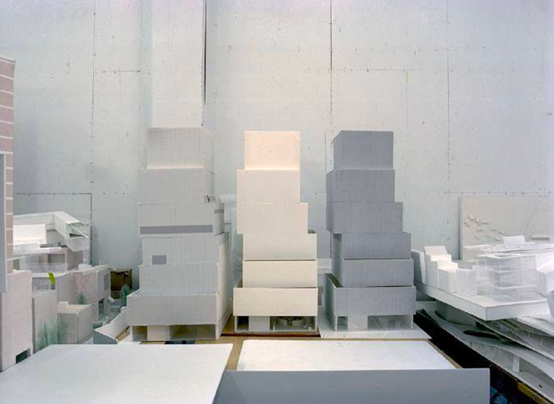
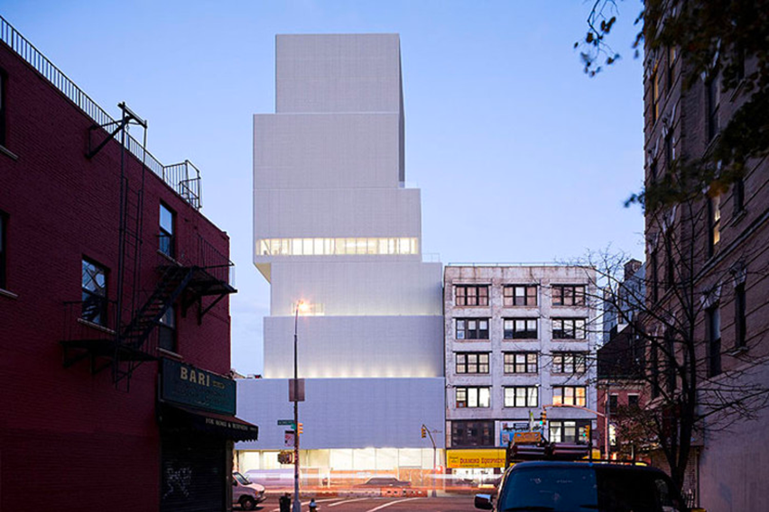
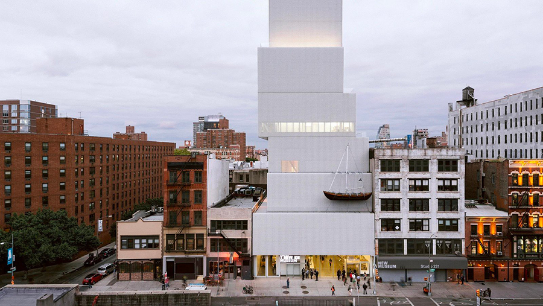
- blocchi sovrapposti e sfalsati,
- una configurazione che nasce dalla luce e dalla direzione,
- un equilibrio instabile ma coerente,
- una struttura che, una volta comparsa, non può più essere diversa.
Il progetto di SANAA per il New Museum di New York è nato da un lungo processo che ha comportato studi di volumetria fisica utilizzando materiali semplici ed effimeri come carta e cartone. Questi primi modelli hanno esplorato il concetto di impilamento e spostamento di volumi rettilinei, spesso denominati “scatole bento”, attorno a un nucleo centrale per ovviare ai vincoli del sito e creare spazi interni variegati.
a) Processo di progettazione e studi sui modelli
- Approccio fisico iniziale: SANAA ha iniziato il proprio flusso di lavoro con la modellazione fisica per affrontare questioni fondamentali quali la scala, la forma e il modo in cui l’edificio si sarebbe relazionato con il contesto urbano.
- Concetto delle “scatole impilate”: l’idea centrale consisteva nel prendere l’intera superficie edificabile e dividerla in sette scatole di dimensioni diverse, che sono state poi impilate e spostate fuori asse. Ciò ha creato degli spazi deliberati tra i piani, consentendo alla luce naturale di entrare dai lati e variando l’altezza dei soffitti negli spazi della galleria privi di colonne.
- Materiali effimeri: i modelli di lavoro erano tipicamente realizzati con materiali temporanei facilmente reperibili, come cartone e carta, completi di segni a matita e appunti. Ciò ha consentito un processo fluido e sperimentale, registrando domande e potenziali errori lungo il percorso.
- Documentazione fotografica: l’architetto Thomas Demand ha documentato questi e altri modelli effimeri nell’ufficio di SANAA come parte della sua serie “Model Studies”, evidenziandone la natura temporanea e la qualità grezza e sperimentale.
- Piante variabili: lo spostamento dei volumi ha fatto sì che ogni piano avesse una configurazione e un rapporto con l’esterno unici, evitando il tipico schema omogeneo dei grattacieli.
- Nucleo centrale: la struttura dell’edificio è sostenuta da un unico nucleo centrale in acciaio che ospita i servizi e la circolazione, consentendo agli spazi della galleria che lo circondano di rimanere aperti e flessibili.
- Sviluppo della facciata: i primi modelli di volumetria si concentravano sulla forma; i modelli successivi e i campioni di materiali sono stati utilizzati per determinare il trattamento finale della facciata con una rete di alluminio espanso, che funge da rivestimento sfumato e semitrasparente sulle pareti bianche, conferendo all’edificio apparentemente “massiccio” un aspetto leggero.